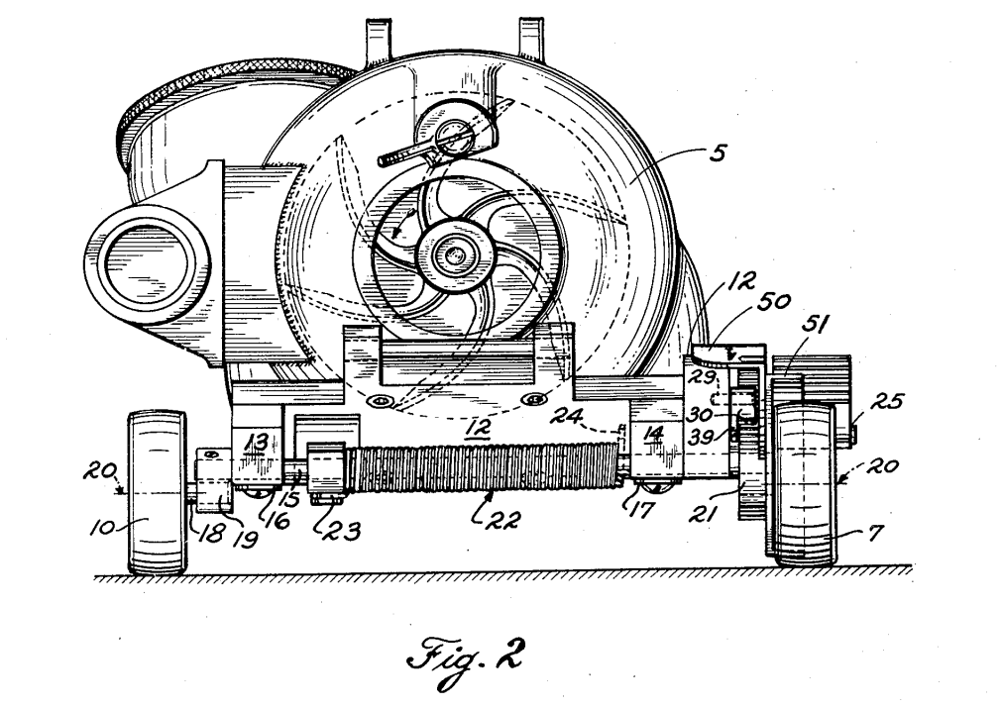

James B. Kirby Patents
List of vacuum-related patents filed by James Kirby.
Kirby patented many other inventions, including laundry machines, dishwashers, a fishing reel, a radio condensor, a self cleaning lake, among others.
← Back to main page
Patents List
| Date Filed | Date Granted | Patent № | PDF Link | Notes |
|---|---|---|---|---|
| 03/15/1910 | 11/28/1911 | US1010388 | Vacuum-producing machine | |
| 06/11/1910 | 10/12/1915 | US1156235 | Handhold vacuum-cleaner | |
| 07/29/1911 | 10/15/1912 | USD43147 | Casing for pneumatic cleaners (design) | |
| 08/19/1911 | 05/23/1916 | US1184459 | Pneumatic cleaner | |
| 11/01/1912 | 12/26/1916 | US1209718 | Vacuum cleaning-machine | |
| 04/04/1913 | 12/26/1916 | US1209719 | Vacuum cleaning-machine | |
| 09/08/1913 | 05/09/1916 | US1182092 | Lubricating device (vacuum motor-shaft bearing) | |
| 09/15/1913 | 12/26/1916 | US1209720 | Vacuum cleaning-machine | |
| 09/15/1913 | 08/14/1917 | US1236944 | Vacuum cleaning-machine | |
| 09/15/1913 | 05/14/1918 | US1265789 | Vacuum cleaning-machine | |
| 09/15/1913 | 11/04/1913 | USD44846 | Vacuum-cleaner casing (design) | |
| 01/10/1914 | 06/16/1914 | US1100575 | Vacuum-cleaner | |
| 03/28/1914 | 12/26/1916 | US1209722 | Vacuum cleaning-machine | |
| 12/07/1914 | 05/23/1916 | US1184458 | Vacuum cleaning-machine | |
| 01/20/1915 | 07/11/1922 | US1422105 | Suction cleaner | |
| 02/17/1915 | 05/14/1918 | US1265790 | Agitating device for vacuum-cleaner nozzles | |
| 06/21/1915 | 07/25/1916 | US1192830 | Suction-cleaner | |
| 07/09/1915 | 07/20/1920 | US1347166 | Suction cleaner | |
| 10/19/1915 | 02/06/1917 | US1214796 | Suction-cleaner | |
| 01/22/1916 | 11/28/1916 | US1206116 | Pneumatic cleaner | |
| 01/22/1916 | 11/28/1916 | US1206117 | Pneumatic cleaner | |
| 10/02/1916 | 06/19/1917 | USD50946 | Suction-cleaner casing (design) | |
| 10/02/1916 | 02/19/1918 | US1257288 | Suction-cleaner | |
| 10/30/1916 | 05/14/1918 | US1265791 | Vacuum cleaning-machine | |
| 06/09/1917 | 02/18/1919 | US1294473 | Vacuum-cleaner | |
| 07/12/1917 | 07/20/1920 | US1347167 | Suction-cleaner | |
| 10/07/1918 | 07/04/1922 | US1421957 | Suction sweeper | |
| 04/12/1919 | 07/04/1922 | US1421958 | Suction sweeper | |
| 03/24/1920 | 11/01/1921 | US1395500 | Brushing mechanism for sweepers | |
| 03/24/1920 | 03/06/1923 | US1447419 | Cleaner casing | |
| 01/24/1921 | 02/02/1926 | US1571276 | Suction cleaner | |
| 02/18/1922 | 07/06/1926 | US1591325 | Suction cleaner | |
| 05/12/1923 | 01/15/1929 | US1698725 | Suction cleaner | |
| 11/05/1927 | 05/19/1931 | US1806168 | Suction cleaner | |
| 07/11/1930 | 12/04/1934 | US1983175 | Suction cleaner | |
| 07/19/1930 | 03/20/1934 | US1952014 | Suction carpet sweeper | |
| 11/12/1930 | 02/27/1934 | US1949052 | Suction cleaning apparatus | |
| 01/19/1931 | 09/08/1936 | US2053563 | Pneumatic cleaner | |
| 01/19/1931 | 02/08/1938 | US2107571 | Suction cleaner | |
| 02/03/1931 | 10/16/1934 | US1976998 | Suction cleaner | |
| 07/20/1931 | 03/01/1938 | US2109621 | Suction cleaner | |
| 06/26/1933 | 05/04/1937 | US2079293 | Suction sweeper | |
| 12/27/1933 | 11/12/1940 | US2221745 | Suction sweeper | |
| 02/01/1934 | 04/03/1934 | USD91886 | Suction cleaner casing (design) | |
| 05/08/1935 | 11/12/1940 | US2221746 | Vacuum cleaner | |
| 05/03/1937 | 09/12/1939 | US2172911 | Suction sweeper | |
| 11/13/1939 | 07/14/1942 | US2289711 | Suction cleaner | |
| 12/15/1939 | 05/28/1940 | USD120736 | Suction cleaner casing (design) | |
| 05/03/1940 | 07/21/1942 | US2290336 | Handle construction (vacuum) | |
| 10/24/1941 | 12/30/1941 | USD130959 | Dust collector & blower housing for vacuum cleaners (design) | |
| 07/15/1944 | 06/05/1951 | US2555887 | Airflow-controlled nozzle adjustment for vacuum cleaners | |
| 08/16/1944 | 04/18/1950 | US2504846 | Vacuum cleaner w/ auxiliary suction tube & auto brush drive | |
| 01/29/1945 | 03/14/1950 | US2500832 | Vacuum cleaner | |
| 11/13/1945 | 01/07/1947 | USD146180 | Vacuum cleaner tank (design) | |
| 04/22/1946 | 01/22/1952 | US2583054 | Automatic nozzle adjusting device for vacuum cleaners | |
| 06/14/1947 | 12/12/1950 | US2534171 | Filter cleaner for vacuum dust collectors | |
| 01/26/1948 | 04/15/1952 | US2592710 | Sweeper-type vacuum cleaner w/ automatic nozzle adjustment | |
| 02/03/1949 | 08/11/1953 | US2648396 | Vacuum cleaner | |
| 06/22/1953 | 02/18/1958 | US2823411 | Vacuum cleaner | |
| 08/31/1953 | 02/18/1958 | US2823412 | Vacuum cleaner nozzle adjustment |